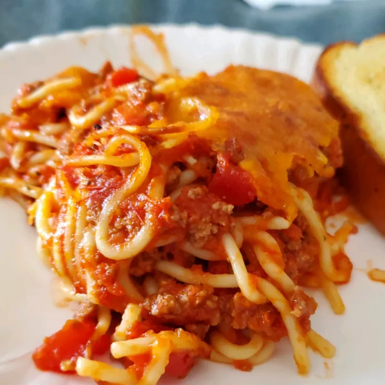

Grilled Cheese Sandwich

Description
Want spaghetti but don't have enough time, this recipe will get you covered.
With simple ingredients with even simpler directions, this easy recipe will
make you enjoy a quick baked spaghetti in no time!
Ingredients
- 3/4 pound lean ground beef
- 1 (16 ounce) jar spaghetti sauce
- 1 pound spaghetti pasta
- 1 cup shredded mild Cheddar cheese
Steps
- Preheat the oven to 350 degrees F (175 degrees C).
- Cook beef in a large skillet over medium-high heat until crumbly and brown, 8 to 10 minutes. Stir spaghetti sauce into beef. Reduce heat and simmer.
- Meanwhile, bring a large pot of lightly salted water to a boil. Stir in spaghetti; cook until al dente, 8 to 10 minutes. Drain.
- Add spaghetti to meat mixture; mix well. Transfer to a 9x13-inch dish. Top with Cheddar cheese.
- Bake in the preheated oven until heated through and cheese is bubbly, about 30 minutes. Enjoy!